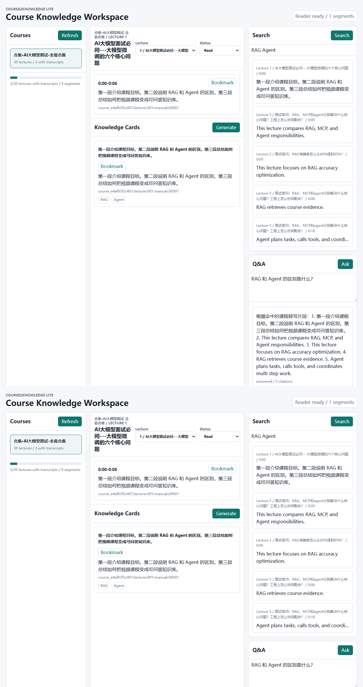
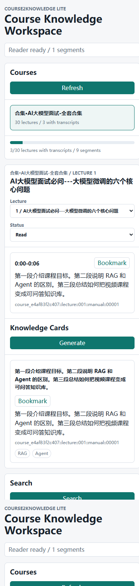

Public course knowledge workspace
Turn a video course into something you can read, search, and ask.
Course2Knowledge Lite imports Bilibili course material, keeps transcript evidence, builds local knowledge cards, and exposes the same course store through Web Lite and Feishu/Hermes Lite.

Effect showcase
A course workspace, not another pile of video links.
The showcase below is captured from the public Lite app running locally against the included demo store. It shows the actual reader, search, Q&A, cards, notes, bookmarks, and lightweight progress surfaces.

Real case
From one Bilibili collection to an inspectable knowledge base.
Collection import
A public Bilibili season URL is expanded into ordered lectures with BV identifiers, titles, and source links.
Evidence layer
Transcript segments become source records. The demo case has 9 segments across 3 transcript-backed lectures.
Learning surface
Web Lite projects the same local store into reader, cards, search, Q&A, notes, bookmarks, and read status.
Chat surface
Feishu/Hermes Lite can use the public profile and plugin to answer from course evidence without importing private learning-coach loops.
Architecture and idea
The timeline is raw material. Evidence is the product spine.
Lite keeps the strong idea: make course material queryable and useful. It removes protected closed-loop coaching behavior so the public release stays focused, inspectable, and easy to run.
Bilibili URL
Import job
Transcript segments
Knowledge store
Web + Feishu Lite
Evidence first
Search, Q&A, and cards are grounded in transcript segments and keep citations visible.
Two frontdesks, one store
Web Lite and Feishu/Hermes Lite read and write the same local public course store.
Deliberately trimmed
No planning automation, learner scoring, exercise review, production identifiers, private logs, or protected orchestration.
Product boundary
Open enough to be useful. Trimmed enough to stay clean.
Included
- Bilibili course import boundary
- Local JSON course knowledge store
- Lecture reader and transcript search
- Source-linked knowledge cards
- Citation-based course Q&A
- Notes, bookmarks, and reading progress
- Public Hermes Lite profile skeleton
Excluded
- Automatic study-plan automation
- Learner scoring and mastery loops
- Exercise-review workflow
- Visual exercise interpretation
- Spaced-review state mutation
- Production chat exports or identifiers
- Private Learning OS runtime files
Deploy in minutes
A local-first install path with no infrastructure theater.
The recommended deployment is intentionally small: install the Python package, run Web Lite, and sync the public Hermes profile if chat is needed.
pip install -e .
course2knowledge-lite web
course2knowledge-lite sync-profile --apply --create-profile
course2knowledge-lite smoke-profile --profile-root %USERPROFILE%\\.hermes\\profiles\\course2knowledge-lite
Read deployment guide Read architecture Read product boundary